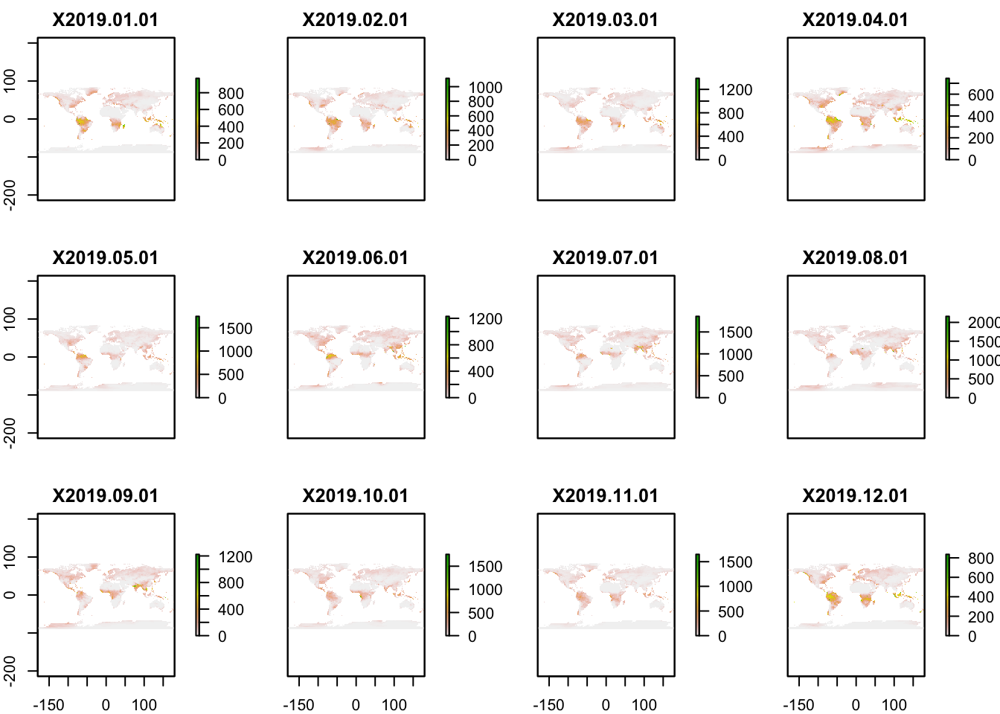
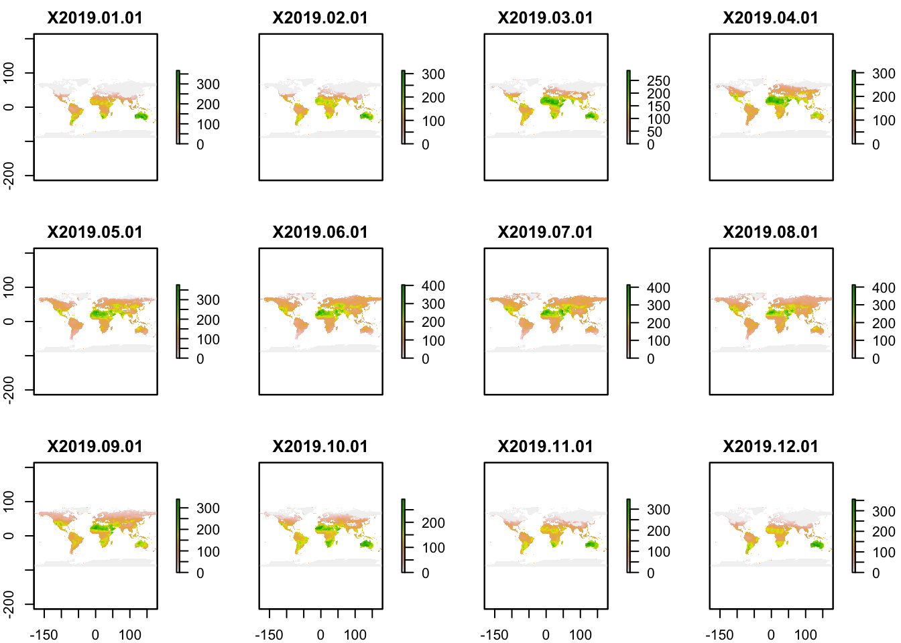
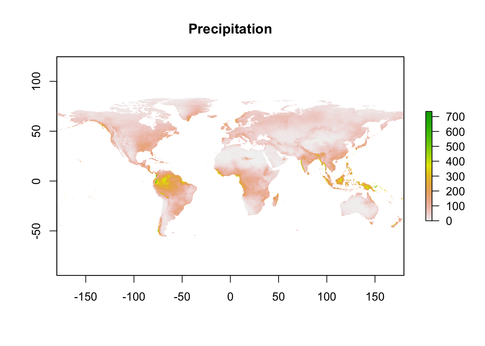
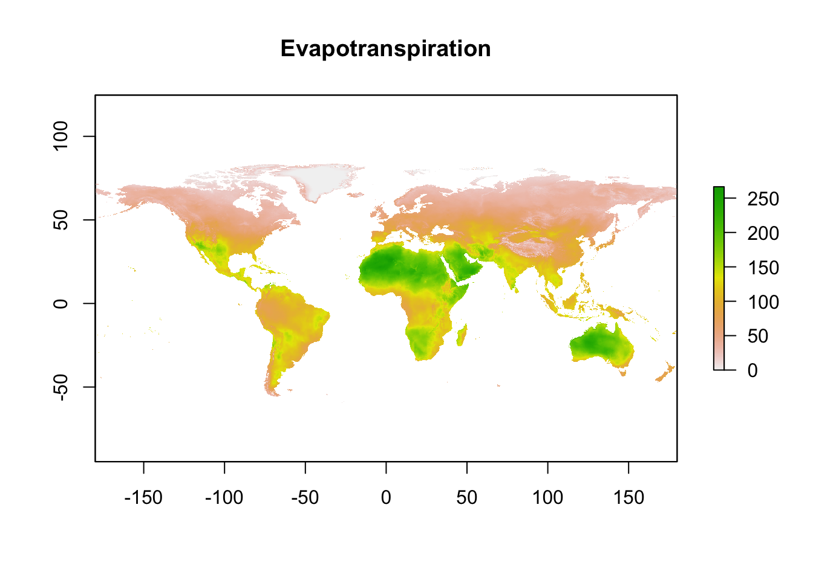
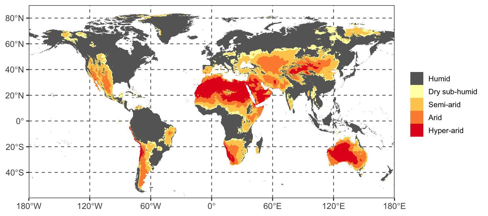
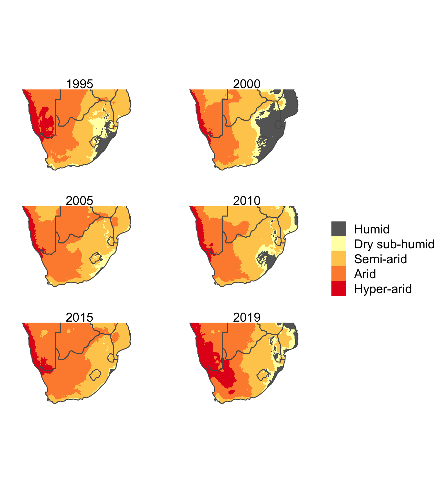

Using raster maths to calculate and map aridity indices
Peter Kamerman
15 December 2020I was asked by my wife, Prof Andrea Fuller, head of the Wildlife Conservation Physiology Lab, University of the Witwatersrand, South Africa, to assist her and some colleagues who were writing a paper on how dryland mammals may respond to climate change 1 to update a figure (Figure 1 below) on the global aridity index, which appears in the 2019 IPCC report on climate change 2. The original figure uses 2015 data, and they wanted to use 2019 data.
The aridity index is the ratio of the total amount of precipitation in an area and the amount of evapotranspiration . That is, what is the water gain (precipitation) relative to the amount of water loss (evapotranspiration) in a region. The smaller the ratio, the more arid a region is.
I had used the mapping functions in R before (for example, see here), but never to plot raster data. So, I took up the challenge to reproduce the plot.
This blog post details how I accomplished the task, and, as importantly, serves as a “note to self” on how I did it.
Global drylands figure
First I needed to get access to the raster data, which is freely available through the amazing TerraClimate project 3. Although there are no aridity index rasters, data on precipitation and evapotranspiration are available for the period 1958 to 2019, and from which I could calculate the aridity index using raster maths.
Load packages
Download, import, and inspect data
For importing the downloaded file, I used the raster::stack function, which imports the series of raster objects contained in the _*.nc_ file (one object for each month of the year) and stacks them into a single ‘RasterStack’ object.
#--- Download the files from the TerraClimate website ---#
# Precipitation
download.file(url = 'http://thredds.northwestknowledge.net:8080/thredds/fileServer/TERRACLIMATE_ALL/data/TerraClimate_ppt_2019.nc',
destfile = 'ppt.nc')
# Evapotranspiration
download.file(url = 'http://thredds.northwestknowledge.net:8080/thredds/fileServer/TERRACLIMATE_ALL/data/TerraClimate_pet_2019.nc',
destfile = 'pet.nc')
#--- Import the downloaded files ---#
# Precipitation
ppt <- stack(x = 'ppt.nc')
# Evapotranspiration
pet <- stack(x = 'pet.nc')
#--- Inspect ---#
# Precipitation
plot(ppt)

As can be seen from the plots, there are data for each month of 2019 (one for each layer in the ‘RasterStack’ object), but I want a single figure reflecting the average annual data. This is where raster maths came in handy.
Raster maths
I used the raster::calc function to generate a new raster object consisting of a single layer by calculating the arithmetic mean across the layers of the RasterLayer object.
You can also see that the small multiples have Antarctica plotted, but the original figure (Figure 1 above) does not, and so I needed to crop the rasters to exclude Antarctica using the raster::extent and raster::crop functions.
#--- Raster maths ---#
# Precipitation
ppt_mean <- calc(ppt, # RasterStack object
fun = mean, # Function to apply across the layers
na.rm = TRUE)
# Evapotranspiration
pet_mean <- calc(pet,
fun = mean,
na.rm = TRUE)
#--- Set the extent ---#
# Cut off all values below 60 degrees South (removing Antarctica)
ext <- extent(c(xmin = -180, xmax = 180,
ymin = -60, ymax = 90))
#--- Crop ---#
# Precipitation
ppt_mean <- crop(x = ppt_mean,
y = ext)
# Evapotranspiration
pet_mean <- crop(x = pet_mean,
y = ext)
#--- Inspect ---#
# Precipitation
plot(main = 'Precipitation',
ppt_mean)

Now that I had combined the layers into a single layer and cropped them to the area I wanted, I needed to calculate the aridity index by overlaying the two rasters ppt_mean and pet_mean and specifying how the layers should be combined using the raster::overlay function. In this case I wanted to take the ratio of precipitation to evapotranspiration.
#--- Calculate aridity index ---#
# Precipitation (ppt) / Evapotranspiration (pet)
aridity_index <- overlay(x = ppt_mean, # Raster object 1
y = pet_mean, # Raster object 2
fun = function(x, y){return(x / y)}) # Function to applyYou can plot rasters using the raster::plot function, but I find it has limited functionality, so to give me more flexibility when plotting the aridity index, I converted the raster to a dataframe so that I could use ggplot2. First I converted the raster, using the raster::rasterToPoints function, to a matrix of x and y coordinates and a layer expressing the value at each coordinate.
Then I converted the matrix to a dataframe using the base::as.data.frame function, and recoded all the layer values into a categorical variable representing the aridity index (AI) categories. These categories are:
Humid: AI \(\geq\) 0.65,
Dry sub-humid: 0.50 \(<\) AI \(\leq\) 0.65
Semi-arid: 0.20 \(<\) AI \(\leq\) 0.50
Arid: 0.05 \(<\) AI \(\leq\) 0.20
Hyper-arid: AI \(<\) 0.05
#--- Convert to the matrix to a dataframe ---#
aridity_index_df <- as.data.frame(aridity_index_matrix)
#--- Recode aridity index into categories --#
aridity_index_df <- aridity_index_df %>%
# Recode
mutate(category = case_when(
is.infinite(layer) ~ 'Humid',
layer >= 0.65 ~ 'Humid',
layer >= 0.5 & layer < 0.65 ~ 'Dry sub-humid',
layer >= 0.2 & layer < 0.5 ~ 'Semi-arid',
layer >= 0.05 & layer < 0.2 ~ 'Arid',
layer < 0.05 ~ 'Hyper-arid'
)) %>%
# Convert to ordered factor
mutate(category = factor(category,
levels = c('Hyper-arid', 'Arid', 'Semi-arid',
'Dry sub-humid', 'Humid'),
ordered = TRUE))Plot the data
Lastly, I plotted the data.
#--- Set a colour palette ---#
colours <- c('#e31a1c', '#fd8d3c', '#fecc5c', '#ffffb2', '#666666')
#--- Plot the data ---#
ggplot(data = aridity_index_df) +
aes(y = y,
x = x,
fill = category) +
geom_raster() +
scale_fill_manual(values = colours,
guide = guide_legend(reverse = TRUE)) +
scale_y_continuous(limits = c(-60, 90),
expand = c(0, 0),
breaks = c(-40, -20, 0, 20, 40, 60, 80),
labels = c(expression('40'*degree*'S'),
expression('20'*degree*'S'),
expression('0'*degree),
expression('20'*degree*'N'),
expression('40'*degree*'N'),
expression('60'*degree*'N'),
expression('80'*degree*'N'))) +
scale_x_continuous(limits = c(-180, 180),
expand = c(0, 0),
breaks = c(-180, -120, -60, 0, 60, 120, 180),
labels = c(expression('180'*degree*'W'),
expression('120'*degree*'W'),
expression('60'*degree*'W'),
expression('0'*degree),
expression('60'*degree*'E'),
expression('120'*degree*'E'),
expression('180'*degree*'E'))) +
theme_bw(base_size = 14) +
theme(legend.title = element_blank(),
legend.text = element_text(size = 10),
axis.title = element_blank(),
panel.grid.major = element_line(linetype = 2,
size = 0.5,
colour = '#666666'),
panel.grid.minor = element_blank())
I think that is a fairly good reproduction of the original figure from the IPCC report, updated to use 2019. As you can see large swaths of North Africa, the Arabian Peninsula, and central Australia are deemed hyper-arid regions. In fact, most of Australia is hyper-arid or arid. The same goes for the Southern African region I am from, were the West coast is hyper-arid, and most of the rest of the region is arid or semi-arid.
Seeing this gradient from hyper-arid to semi-arid across the Southern African region, I wanted to see if there has been any changes in this gradient over the past 25 years.
Aridity index across South Africa (1995 to 2019)
I wanted to use data from 1995 through to 2019, in 5-year periods. This meant downloading and processing multiple files, and to reduce the amount of repetition in my code, I turned to the map functions in the purrr package.
Download data
#--- Load packages ---#
library(purrr)
#--- Precipitation ---#
# Construct a vector of URLs to download data
## Years to download
years <- c(seq(from = 1995, to = 2015, by = 5), 2019)
## First chunk of the URL
precipitation_lead <- 'http://thredds.northwestknowledge.net:8080/thredds/fileServer/TERRACLIMATE_ALL/data/TerraClimate_ppt_'
## Piece together the precipitation_lead and year and add the file extension (.nc)
precipitation_urls <- paste0(precipitation_lead, years, '.nc')
# Construct a vector of destination files
precipitation_destfile <- paste0('TerraClimate_ppt_', years, '.nc')
# Download using the purrr::map2 functions
map2(.x = precipitation_urls, # Input 1 to apply a function over
.y = precipitation_destfile, # Input 2 to apply a function over
~ download.file(url = .x, # The function to apply
destfile = .y,
method = 'curl'))
#--- Evapotranspiration
# Construct a vector of URLs to download data
## First chunk of the URL
evapotranspiration_lead <- 'http://thredds.northwestknowledge.net:8080/thredds/fileServer/TERRACLIMATE_ALL/data/TerraClimate_pet_'
## Piece together the precipitation_lead and year and add the file extension (.nc)
evapotranspiration_urls <- paste0(evapotranspiration_lead, years, '.nc')
# Construct a vector of destination files
evapotranspiration_destfile <- paste0('TerraClimate_pet_', years, '.nc')
# Download using the purrr::map2 functions
map2(.x = evapotranspiration_urls,
.y = evapotranspiration_destfile,
~ download.file(url = .x,
destfile = .y,
method = 'curl'))Import data
#--- Precipitation ---#
# Get a list of precipitation file names
precipitation_files <- list.files(path = '.', pattern = '.ppt.')
# Import using the purrr::map function to apply the raster::stack function
precipitation_rasters <- map(.x = precipitation_files,
~ stack(.x))
#--- Evapotranspiration ---#
# Get a list of evapotranspiration file names
evapotranspiration_files <- list.files(path = '.', pattern = '.pet.')
# Import using the purrr::map function to apply the raster::stack function
evapotranspiration_rasters <- map(.x = evapotranspiration_files,
~stack(.x))Crop the rasters
I needed to crop the large raster data to only include Southern Africa.
By only using a subset of the data in the raster file, this cropping step would speed-up the processing of the data in later steps.
Raster maths
Then to calculate the annual mean for each year.
Process the data as a dataframe
To try something different to the raster::overlay method I used in the previous section to calculate the global aridity index, in this section, I converted the raster objects to dataframes using the combination of raster::rasterToPoints and base::as.data.frame, and then did the maths using the dplyr::mutate function.
#--- Convert each raster to a dataframe ---#
# Precipitation
precipitation_rasters <- map(.x = precipitation_rasters,
~ rasterToPoints(.x) %>%
as.data.frame(.) %>%
rename(precipitation = layer)) # For later join
# Evapotranspiration
evapotranspiration_rasters <- map(.x = evapotranspiration_rasters,
~ rasterToPoints(.x) %>%
as.data.frame(.) %>%
rename(evapotranspiration = layer)) # For later join
#--- Join the precipitation and evapotranspiration dataframes ---#
ai_df <- map2(.x = precipitation_rasters,
.y = evapotranspiration_rasters,
~ left_join(.x, .y))
#-- Add a year identifier to each dataframe --#
years2 <- c(seq(from = 1995, to = 2015, by = 5), 2019)
ai_df <- map2(.x = ai_df,
.y = years2,
~ .x %>%
mutate(year = as.character(.y)))
#-- Bind list items to make a single large dataframe (1995 to 2019) --#
ai_df <- map_df(.x = ai_df,
~ bind_rows(.x))
#--- Calculate aridity index ---#
ai_df <- ai_df %>%
mutate(aridity_index = precipitation / evapotranspiration)
#--- Recode aridity index into categories --#
ai_df <- ai_df %>%
# Recode
mutate(category = case_when(
is.infinite(aridity_index) ~ 'Humid',
aridity_index >= 0.65 ~ 'Humid',
aridity_index >= 0.5 & aridity_index < 0.65 ~ 'Dry sub-humid',
aridity_index >= 0.2 & aridity_index < 0.5 ~ 'Semi-arid',
aridity_index >= 0.05 & aridity_index < 0.2 ~ 'Arid',
aridity_index < 0.05 ~ 'Hyper-arid'
)) %>%
# Convert to ordered factor
mutate(category = factor(category,
levels = c('Hyper-arid', 'Arid', 'Semi-arid',
'Dry sub-humid', 'Humid'),
ordered = TRUE))Get Natural Earth map
I wanted to plot the country outlines on the raster image, and to do this I needed the rnaturalearth package.
# Load package
library(rnaturalearth)
library(rnaturalearthdata)
#--- Get medium scale (1:50) map of Southern African countries ---#
# Get a map of Africa
africa <- ne_countries(scale = 50,
continent = 'Africa')
# Extract Southern African countries
country_filter <- c('ZAF', 'NAM', 'BWA', 'ZWE', 'MOZ', 'MWI', 'ZMB', 'AGO')
s_africa <- africa %>%
st_as_sf(.) %>% # Convert the large SpatialPolygonDataFrame into a sf object
filter(sov_a3 %in% country_filter) # Filter out the countries I wantPlot the data
#--- Set a colour palette ---#
colours2 <- c('#e31a1c', '#fd8d3c', '#fecc5c', '#ffffb2', '#666666')
#--- Plot the data ---#
ggplot() +
geom_raster(data = ai_df, # Plot the aridity index raster
aes(x = x,
y = y,
fill = category)) +
geom_sf(data = s_africa,
alpha = 0) + # Plot Southern Africa
scale_fill_manual(values = colours2,
guide = guide_legend(reverse = TRUE)) +
coord_sf(ylim = c(-37, -21),
xlim = c(10, 40)) +
theme_void(base_size = 18) +
facet_wrap(~year, ncol = 2) +
theme(legend.title = element_blank())
It’s always difficult to interpret a series of snapshots in time, and as can be seen in the figure, there are spatial fluctuations in the aridity index across the ~25 years. For example, the humid zone increases massively in 2000, but is minimal in most other years. What is clear however, is that 2019 was a bad year, with large expanses of Namibia and South Africa experiencing hyper-arid conditions. It will be interesting to see if this trend continues in 2020, especially since the El Nino-Southern Oscillation is in a La Nina state in 2020, which is associated with above average rainfall in Southern Africa.
I hope you found this blog post useful, and that enjoyed reading it.
Session information
## R version 4.0.2 (2020-06-22)
## Platform: x86_64-apple-darwin17.0 (64-bit)
## Running under: macOS Catalina 10.15.7
##
## Matrix products: default
## BLAS: /Library/Frameworks/R.framework/Versions/4.0/Resources/lib/libRblas.dylib
## LAPACK: /Library/Frameworks/R.framework/Versions/4.0/Resources/lib/libRlapack.dylib
##
## locale:
## [1] en_US.UTF-8/en_US.UTF-8/en_US.UTF-8/C/en_US.UTF-8/en_US.UTF-8
##
## attached base packages:
## [1] stats graphics grDevices utils datasets methods base
##
## other attached packages:
## [1] rnaturalearthdata_0.1.0 rnaturalearth_0.1.0 ggplot2_3.3.2
## [4] purrr_0.3.4 dplyr_1.0.2 sf_0.9-5
## [7] raster_3.3-13 sp_1.4-2
##
## loaded via a namespace (and not attached):
## [1] Rcpp_1.0.5 compiler_4.0.2 pillar_1.4.6 class_7.3-17
## [5] tools_4.0.2 ncdf4_1.17 digest_0.6.25 gtable_0.3.0
## [9] evaluate_0.14 lifecycle_0.2.0 tibble_3.0.3 lattice_0.20-41
## [13] pkgconfig_2.0.3 rlang_0.4.7 DBI_1.1.0 rgdal_1.5-16
## [17] yaml_2.2.1 xfun_0.16 e1071_1.7-3 withr_2.2.0
## [21] stringr_1.4.0 knitr_1.29 rgeos_0.5-3 generics_0.0.2
## [25] vctrs_0.3.4 classInt_0.4-3 grid_4.0.2 tidyselect_1.1.0
## [29] glue_1.4.2 R6_2.4.1 rmarkdown_2.3 farver_2.0.3
## [33] magrittr_1.5 scales_1.1.1 codetools_0.2-16 htmltools_0.5.0
## [37] ellipsis_0.3.1 units_0.6-7 colorspace_1.4-1 KernSmooth_2.23-17
## [41] stringi_1.4.6 munsell_0.5.0 crayon_1.3.4Fuller A, et al., How dryland mammals will respond to climate change: the effects of body size, heat load, and a lack of food and water. J Exp Biol IN PRESS. DOI: 10.1242/jeb.238113↩︎
Desertification. In: Climate Change and Land: an IPCC special report on climate change, desertification, land degradation, sustainable land management, food security, and greenhouse gas fluxes in terrestrial ecosystems. URL: ipcc.ch/srccl/chapter/chapter-3/. Accessed: 15 December 2019.↩︎
Abatzoglou JT, Dobrowski SZ, Parks SA, Hegewisch KC. TerraClimate, a high-resolution global dataset of monthly climate and climatic water balance from 1958-2015. Sci Data 5:170191, 2018. DOI: 10.1038/sdata.2017.191↩︎